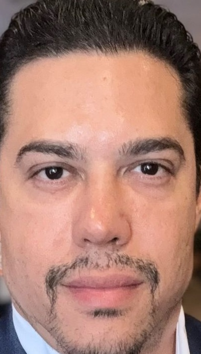

Início / Urologia
Dr. Helton Veloso de Moura.
Urologia para adultos em João Pessoa, da conversa inicial ao acompanhamento.

CRM 7113-PB · RQE 5122Sua saúde, seu contexto
Conheça o médico.
Identificação profissional
Helton Veloso de Moura · Urologia · CRM 7113-PB · RQE 5122. Atendimento particular a adultos em João Pessoa.
Conversa com contexto
Dúvidas urinárias, resultados de exames e escolhas de cuidado precisam de avaliação individual. O conteúdo deste site ajuda a preparar perguntas, sem antecipar diagnóstico.
Sua saúde, seu contexto
Etapas da formação.
2009 · UFPB
Graduação em Medicina na Universidade Federal da Paraíba.
2013 · HULW / UFPB
Residência em Cirurgia Geral no Hospital Universitário Lauro Wanderley, Universidade Federal da Paraíba.
2017 · HGV, Recife
Residência em Urologia no Hospital Getúlio Vargas, em Recife.
Sua saúde, seu contexto
Temas de atuação.
Saúde do homem e litíase
Avaliação de questões da saúde do homem e de cálculos urinários, com investigação e acompanhamento de acordo com a necessidade clínica.
Próstata e uro-oncologia
Uro-oncologia e cirurgia robótica da próstata integram os temas de atuação. A escolha de uma técnica exige indicação e discussão de alternativas, riscos e limites.
Sua saúde, seu contexto
Uma avaliação, não uma comparação.
Perguntas de saúde
Fertilidade, vasectomia, esvaziamento da bexiga e recuperação são temas para conversar individualmente. Orientações dadas a outras pessoas não funcionam como prescrição.
Onde conversar
Atendimento no bairro Bancários, em João Pessoa. A recepção combina os detalhes de consulta e confirma manualmente a disponibilidade de dia e horário.
Próximo passo
Leve sua dúvida à consulta.
Prepare sua conversa
Reúna exames anteriores que já tiver e as perguntas que gostaria de esclarecer.
Combine o atendimento
Dia e hora são preferências. A recepção precisa confirmar manualmente a disponibilidade.